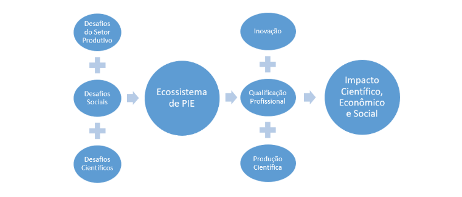
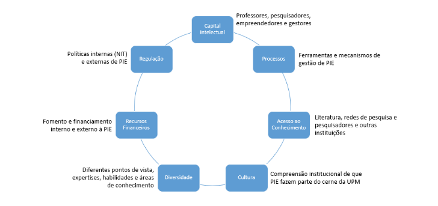
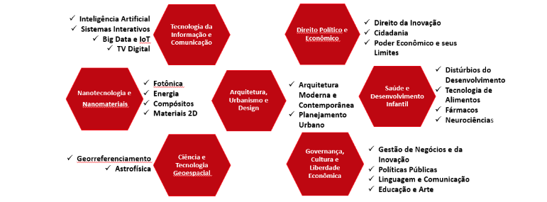
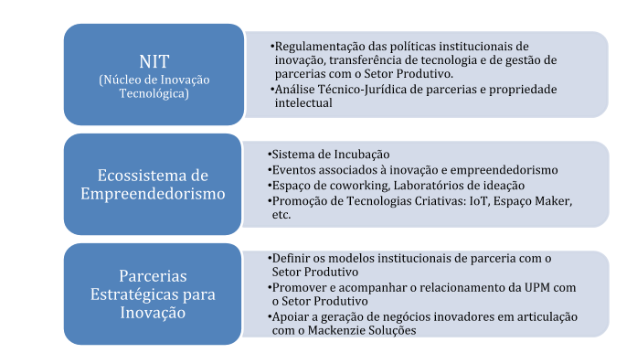

INOVAMACK: O ecossistema de inovação e empreendedorismo da UPM
A Universidade Presbiteriana Mackenzie (UPM) é considerada a melhor Instituição de Ensino Superior não pública do estado de São Paulo há vários anos, de acordo com o Ranking de Universidades da Folha de São Paulo. A UPM possui aproximadamente 42.000 alunos e 1.200 docentes, divididos entre seus campi de Higienópolis, Alphaville e Campinas. A maioria de seus docentes possui Mestrado e/ou Doutorado, e a universidade conta com 13 programas de pós-graduação stricto-sensu em diversas áreas do conhecimento.
A UPM contribui significativamente para a formação de lideranças políticas, empresariais e acadêmicas, investindo na implantação de laboratórios de excelência e assegurando avanços em Pesquisa Científica, Pesquisa Aplicada e Pesquisa Inovativa. Sua qualidade e reconhecimento acadêmico tem resultado em um crescente número de patentes, volume de recursos captados junto aos órgãos de fomento à pesquisa, comissões, representação nos colegiados, entidades associativas e esferas de governo, e maior interesse dos estudantes, professores e pesquisadores. É neste contexto que a UPM estruturou o INOVAMACK, seu Ecossistema de Inovação e Empreendedorismo como o ambiente institucional de pesquisa aplicada e inovativa, capacitação empreendedora e governança de propriedade intelectual, para interface com o setor produtivo e para contribuir com a geração de negócios inovadores. Os desafios Científicos, dos Setores Produtivos e Sociais alimentam o ecossistema, que retorna empreendimentos inovadores, parcerias com empresas e indústrias, e inovação, promovendo impacto científico, econômico e social (Figura 1).

Há várias razões para que o setor produtivo se engaje com a universidade, mas tipicamente essas razões recaem em três grandes grupos: redução de custo e risco; busca pela fronteira do conhecimento e inovação; e desenvolvimento de habilidades, capacidade e perfil profissional. Essas motivações estão fortemente inter-relacionadas e contribuem para um modelo de inovação aberta, por meio do qual as empresas mantêm núcleos de Pesquisa, Desenvolvimento e Inovação (PDI) focados nas ações prioritárias, porém permitem uma capacidade de absorção de conhecimento e expertise externo, principalmente advindo de universidades e centros de pesquisa. Para que o INOVAMACK opere de forma adequada e promova os impactos científico, econômico e social esperados, alguns pré-requisitos são necessários (Figura 3):
- Capital Intelectual: professores, pesquisadores, empreendedores, gestores e demais colaboradores da universidade;
- Processos: ferramentas e mecanismos de gestão;
- Regulação: políticas internas e externas de governança de propriedade intelectual (PI) e de transferência de conhecimento e de tecnologia;
- Acesso ao conhecimento: literatura, artigos científicos, bases de dados, redes de pesquisa e pesquisadores, outras instituições, etc.;
- Recursos financeiros: fomento, financiamento e capital de risco à inovação e ao empreendedorismo;
- Cultura: compreensão institucional de que a pesquisa, a inovação e o empreendedorismo fazem parte da visão e do planejamento estratégico;
- Diversidade: diferentes pontos de vista, expertises, habilidades e áreas de conhecimento.


CIT: A Coordenadoria de Inovação e Tecnologias
A Coordenadoria de Inovação e Tecnologias (CIT) é um órgão assessor da Reitoria da Universidade Presbiteriana Mackenzie responsável pela gestão do INOVAMACK e que tem o seguinte posicionamento estratégico:
Missão: Estruturar, fortalecer e gerenciar as ações institucionais associadas à inovação e empreendedorismo, promovendo impacto acadêmico, econômico e social com sustentabilidade.
Visão: Tornar a Universidade Presbiteriana Mackenzie referência em inovação e empreendedorismo em ambiente acadêmico não-público.
Objetivos Estratégicos:
- Promover as atividades científico-tecnológicas voltadas para a inovação e o empreendedorismo da UPM.
- Contribuir com a excelência e expansão dos programas de pós-graduação e laboratórios de pesquisa da UPM por meio de parcerias com o setor produtivo.
- Promover e dar continuidade aos processos de formação e capacitação empreendedora e para inovação.
- Desenvolver e promover um ecossistema institucional para a criação e maturação de empreendimentos inovadores.
- Fortalecer a capacidade operacional, científica, tecnológica e administrativa da inovação e empreendedorismo da UPM.
- Definir os mecanismos e processos institucionais para a captação e gestão de recursos de parcerias estratégicas para inovação e transferência de tecnologia.
- Estabelecer parcerias com os setores público e privado, tanto para a descoberta de problemas reais a serem resolvidos, quanto para o financiamento da pesquisa aplicada e inovativa.
- Difundir a cultura da inovação e empreendedorismo.
- Consolidar a política de proteção da Propriedade Intelectual, considerando parcerias externas dos setores industrial, comercial, de serviços, cultural e com o poder público.
- Desenvolver a Política de Inovação da UPM.
Um esquema inicial do processo de inovação na universidade pode ser desmembrado nos seguintes passos: 1. Formação de cultura e competência para inovação e empreendedorismo (na comunidade interna de docentes e discentes, mas aberta para a comunidade, que pode vir a se tornar comunidade interna nesse processo); 2. Articulação com empresas para promoção de Parcerias Estratégicas para Inovação; 3. Geração, proteção e comercialização de Propriedade Intelectual; e 4. Criação de Empreendimentos Inovadores e Centros de Inovação.
Estrutura
A CIT está dividida em três áreas com atuações complementares dentro do ecossistema de inovação e empreendedorismo, propondo mecanismos regulatórios, criando e fortalecendo o ecossistema de geração de empreendimentos inovadores, e estabelecendo uma interface com o setor produtivo para a inovação (Figura 4): Núcleo de Inovação Tecnológica (NIT); Setor de Parcerias Estratégicas para Inovação (PEI); e Ecossistema Empreendedor.

Entidades e Associações
As principais entidades e associações às quais a UPM está associada ou faz parte são:
- FORTEC: Fórum Nacional dos Gestores de Inovação e Transferência de Tecnologia.
- ANPROTEC: Associação Nacional de Entidades Promotoras de Empreendimentos Inovadores.
- Rede Inova-SP: Rede Paulista de Propriedade Intelectual e Transferência de Tecnologia.
- Rede Paulista de Ambientes de Inovação.
RINEs: Representantes de Inovação e Empreendedorismo
Os Representantes de Inovação e Empreendedorismo (RINEs) da UPM são professores da Universidade Presbiteriana Mackenzie que atuam na prospecção, promoção e acompanhamento das iniciativas relacionadas à inovação e ao empreendedorismo das Unidades Acadêmicas.
As principais atribuições dos RINEs são:
- Conhecer todas as atribuições e processos da CIT.
- Receber, analisar e dar encaminhamento às demandas e necessidades de registro de Propriedade Intelectual, transferência de tecnologia, projetos inovativos, eventos e demais iniciativas associadas à inovação e empreendedorismo de sua unidade acadêmica.
- Participar de cursos de capacitação em inovação e empreendedorismo, assim como das reuniões periódicas, convocações e demais atividades propostas pela CIT.
- Prospectar pesquisadores e projetos de pesquisa de sua unidade acadêmica que tenham potencial de inovação e sensibilizar os pesquisadores responsáveis sobre trais possibilidades.
- Elaborar relatórios e realizar apresentações associadas às iniciativas de inovação e empreendedorismo de sua unidade acadêmica.
- Viabilizar a pesquisa aplicada e a inovação, servindo de elo com a CIT.
- Promover ações para o desenvolvimento de empreendimentos inovadores na unidade acadêmica.
- Difundir a cultura da inovação e empreendedorismo.
NIT: Núcleo de Inovação Tecnológica
O NIT da UPM é o órgão subordinado à CIT responsável pela regulamentação das políticas institucionais de inovação e transferência de tecnologia. Suas atividades principais são:
- Definir e manter atualizadas as políticas de propriedade intelectual e transferência de tecnologia da UPM;
- Receber, analisar e gerenciar os registros de PI e transferência de tecnologia;
- Elaborar pareceres sobre a propriedade intelectual dos pedidos de convênios de pesquisa orientada e aplicada da UPM com o setor produtivo, juntamente com a Assessoria Jurídica da UPM;
- Assessorar os pesquisadores nos acordos de transferência de tecnologia oriunda da UPM;
- Negociar e gerir os acordos de transferência de tecnologia oriunda da UPM;
- Definir os mecanismos e processos institucionais para a captação e gestão de recursos do setor produtivo para o financiamento à pesquisa orientada e pesquisa aplicada; e
- Participar de eventos e associações envolvendo os NITs estaduais e federais, inovação, transferência de tecnologia e propriedade intelectual que possam ser de interesse da UPM.
Ecossistema Empreendedor
O Programa de Apoio ao Desenvolvimento de Startups da Universidade Presbiteriana Mackenzie, criado pelo Ato da Reitoria A-RE-04/2019, tem por objetivo promover a criação e desenvolvimento de startups que buscam a solução de problemas do setor produtivo e desafios sociais ou ambientais, oferecendo suporte para transformar ideias em empreendimentos de sucesso. O programa aproveita os desdobramentos da Educação Empreendedora nos cursos de graduação da UPM e potencializa os resultados da pesquisa e desenvolvimento levados a efeito por meio de atividades acadêmico-científicas com foco na inovação, tanto na graduação, quanto na pós-graduação.
Jornada Empreendedora
O processo de desenvolvimento de empreendimentos inovadores na UPM considera uma Jornada Empreendedora em quatro fases evolutivas: Ideação; Validação; Aceleração e Crescimento. Dentro das Incubadoras de Empresas do INOVAMACK, as fases de Ideação e Validação ocorrem na Pré-Incubação, enquanto as fases de Aceleração e Crescimento ocorrem na Incubação. As Empresas Associadas são aquelas que já graduaram, ou seja, passaram por todas as etapas anteriores da Jornada, mas permanecem conectadas ao INOVAMACK.
Modalidades
O INOVAMACK oferece vagas na modalidade Residente em Incubadora para todas as startups que precisarem utilizar o espaço físico de uma das incubadoras da UPM, na modalidade Residente em Laboratório para aquelas que quiserem ocupar um espaço físico diferente das incubadoras, incluindo laboratórios da própria universidade, e na modalidade Não-Residente, para as startups que optarem por ocupar um espaço físico externo à UPM.
Apoios oferecidos pelo INOVAMACK
As incubadoras poderão disponibilizar uma área de acordo com as necessidades do empreendedor e o espaço disponível, bem como da infraestrutura a ela associada, para uso coletivo, compreendendo:
- espaço físico;
- recepção e secretaria;
- manutenção e limpeza das áreas internas e externas;
- correio interno;
- vigilância;
- energia elétrica – limitada as condições técnicas do imóvel e da região;
- facilitação à telefonia;
- facilitação do acesso à internet.
Além da infraestrutura física, diversos serviços de suporte estratégico e operacional são oferecidos aos empreendedores:
- utilização da sala de reuniões;
- utilização das bibliotecas da Universidade;
- uso regulamentado dos laboratórios de ensino e pesquisa da Universidade;
- uso regulamentado dos serviços de internet dentro das políticas estabelecidas pela Universidade Presbiteriana Mackenzie;
- utilização de equipamentos audiovisuais, mediante pagamento de taxa estipulada pela Instituição proprietária do(s) equipamento(s);
- consultorias técnicas especializadas;
- apoio técnico na participação e realização de eventos;
- programas de capacitação empreendedora;
- consultoria em áreas como financeira, marketing, contábil e jurídica.